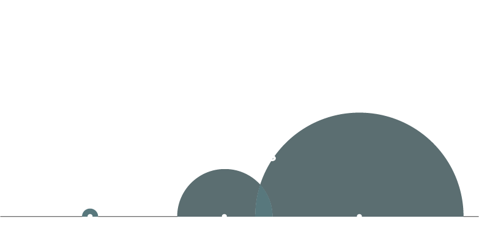
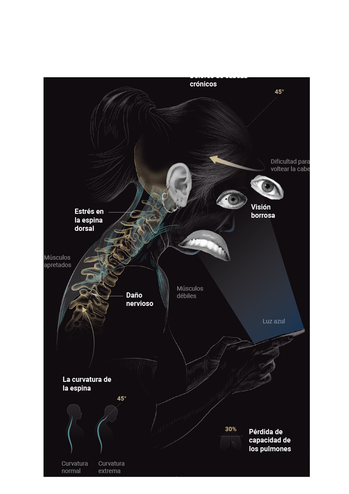

La mayoría de nosotros nos encorvamos sobre nuestro celular por al menos dos horas diarias. Esto puede aumentar el peso efectivo de tu cabeza en magnitudes de hasta 27kg, daña tu postura, y si escribes mientras caminas, te expone a todo tipo de accidentes.
El número de usuarios de teléfonos móviles al rededor del mundo excede los 5000 millones al año. La penetración en el mercado se calcula que seguira creciendo en hasta un 67%, con China apuntando a contribuír con 1500 millones de conexiones, mientras que India con 1100 millones. La ola de crecimiento en el mercado de los celulares puede ser atribuida al reducido costo y disponibilidad de los dispositivos.
Los teléfonos celulares son vistos como escenciales para nuestro día a día, siendo la mensajería el modo más común de comunicación. Groupe Spéciale Mobile Association (GSMA) estima que dos tercios de la población posee un celular. En Enero 2018, al menos 68% de la población tenía acceso a un dispositivo. Ese numero se esperaba que llegara al 75% para el 2020.
Los especialistas recomiendan que agarres el teléfono a la altura de los ojos, tomar descansos regulares de mensajear y limitar el tiempo de pantalla para evitar dolores. Hay aplicaciones disponibles que envían alertas cuando el usuario ha estado en una postura mirando hacia abajo por demasiado tiempo.